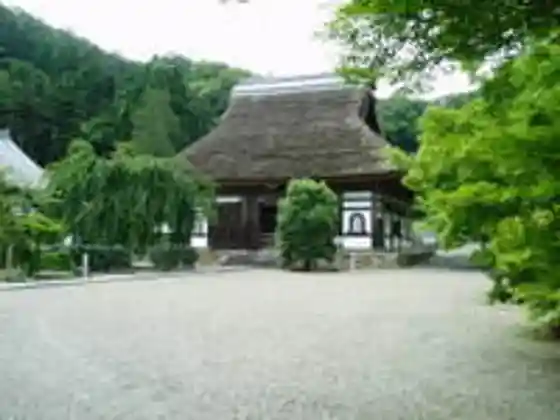
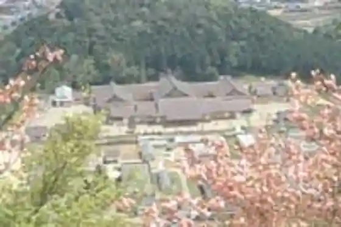
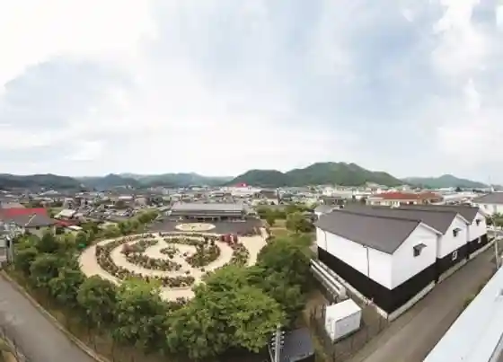

Otsu Aji Keiryu So
Ayabe, Kyoto · 0773-45-1950 · Official / source link
Ankokuji
Ayabe, Kyoto · 0773-44-1565 · Official / source link

Ayabe Fureai Ranch
Ayabe, Kyoto · 0773-48-1000 · Official / source link
Ayabe Umematsu En (Omoto)
Ayabe, Kyoto · 0773-42-0187 · Official / source link

Ayabe Gunzesukuea
Ayabe, Kyoto · 0773-43-0811 · Official / source link

Gunze Hakubutsu En Gunze Memorial Museum
Ayabe, Kyoto · 0773-42-3181 · Official / source link
Ayabe Tourism Association (Ayabe Tourist Information Nai)
Ayabe, Kyoto · 0773-42-9550 · Official / source link
AYABE PEACE Park&Camp
Ayabe, Kyoto · 0773-40-2500 · Official / source link
Ayabe Maruyama Supotsu Park / Guraundogorufu
Ayabe, Kyoto · 0773-43-1140 · Official / source link
Wakamiya Shuzo
Ayabe, Kyoto · 0773-42-0268 · Official / source link
Ayabe Bara Sono
Ayabe, Kyoto · 0773-43-0811 · Official / source link
Toko In
Ayabe, Kyoto · 0773-42-2432 · Official / source link
Shoryaku Tera
Ayabe, Kyoto · 0773-42-9550 · Official / source link
Ki no Hana Iori (Kyu Oka Hana Ie House)
Ayabe, Kyoto · 0773-42-0187 · Official / source link
Ryogon Tera
Ayabe, Kyoto · 0773-47-0043 · Official / source link
Ayabe Onsen
Ayabe, Kyoto · 0773-55-0262 · Official / source link
Ayabe Sogo Sports Park
Ayabe, Kyoto · 0773-44-0990 · Official / source link
Sho Fuku Tera
Ayabe, Kyoto · 0773-46-0185 · Official / source link
Ayabe Tenmonkan (Pao)
Ayabe, Kyoto · 0773-42-8080 · Official / source link
Kurotani Washi Hall
Ayabe, Kyoto · 0773-44-0213 · Official / source link
Ayabe Tokusan Kan
Ayabe, Kyoto · 0773-43-0811 · Official / source link
Ayabe Satoyama Koryu Kenshu Center
Ayabe, Kyoto · 0773-47-0040 · Official / source link
Watashi City Maruyama Kofun Park
Ayabe, Kyoto · 0773-43-1366 · Official / source link
Kokuho Komyo Tera Nio Mon
Ayabe, Kyoto · 0773-55-0550 · Official / source link
Shisuigaoka Park
Ayabe, Kyoto · 0773-42-9550 · Official / source link
Ayabe Tourist Information
Ayabe, Kyoto · 0773-42-9550 · Official / source link
Ayabe Nio Park
Ayabe, Kyoto · 0773-55-0262 · Official / source link
Iwa Oji
Ayabe, Kyoto · 0773-42-2432 · Official / source link
Ayabe Museum
Ayabe, Kyoto · 0773-43-1366 · Official / source link
Yambe Castle Park
Ayabe, Kyoto · 0773-42-9550 · Official / source link
Raijingufiirudo Yambe
Ayabe, Kyoto · 0773-45-1230 · Official / source link